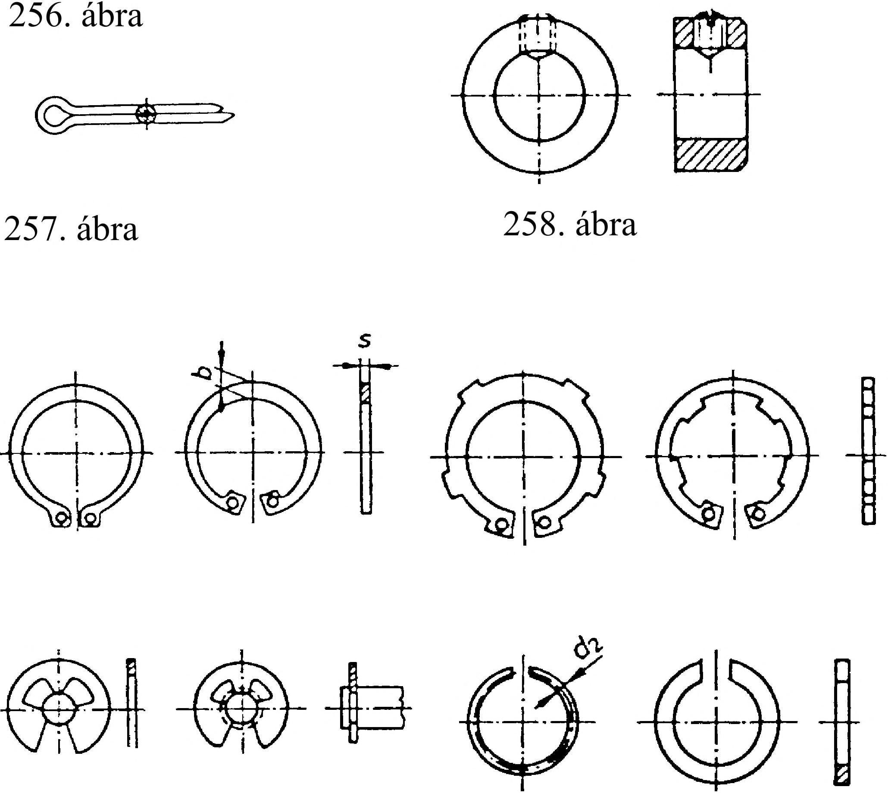

14. Szegek és csapszegek 14. Szegek és csapszegek A gépiparban igen gyakran alkalmazott kötőelemek a szegek és a csapszegek. Ezek laza és szilárd kötések megvalósítására, pl. csuklók csapjaiként, vezető vagy központosító elemként, továbbá túlterhelés elleni biztosítóelemként egyaránt használhatók. A szegek és a csapszegek felfekvő felülete hengeres vagy kúpos, a terhelés pedig általában merőleges a kötőelem tengelyére. 253. ábra 14.1. Szegek és szegkötések A szegek igen sokféle kialakításban készülnek. Az általános gépiparban a szerszámgépek készülékeiben és a járműiparban a következő feladatokra alkalmazzák: kötőelemként, pl. kézikarok, tengelyek rögzítésére; biztosítóelemként , pl. szerszám- és géprészek helyzetének biztosítására; szerkezeti elemként. A szegek kialakításuknak megfelelően három csoportba sorolhatók: - hengeres szegek, (253. ábra) - kúpos szegek (254. ábra), és hasított szegek (255. ábra). 254. ábra i i i i H r =3= i =T= -ii i i i i Hdm6 dh8 dhl 1 L A kúpos szegeket főként tárcsák; gyűrűk, kerékagyak tengelyen való rögzítésére használjuk. A hasított szegeken három hosszirányú hasíték van. Ezt a hasítást vagy bele- hengerük vagy beleütik a szegbe. Az összekötendő alkatrészeket szereléskor együttesen fúrjuk ki, és a nyers lyukba ütjük be a hasított szeget. A hasított szeg szilárd kötést létesít anélkül, hogy szűk tűrésű elemeket kellene készítenünk, alkalmazása ezért gazdaságos. 14.2. Csapszegek és csapszegkötések A csapszegeket általában csuklós kötésekben alkalmazzuk. A csukló egyik eleme mozgathatóan kapcsolódik a csapszeghez, a másik pedig mereven vagy mozgathatóan. A menetes csapszeg alakját, méreteit és beépítését mutatja a 256. ábra. 14.3. Axiális helyzetbiztosító elemek Az axiális helyzetbiztosító- és rögzítő elemek megakadályozzák az agyak, gyűrűk, gördülőcsapágyak perselyek, karok, tárcsák és hasonló szerkezeti elemek nemkívánatos axiális elmozdulását a tengelyeken vagy furatokban, miközben alakzárással többékevésbé jelentős axiális erőket visznek át. A sasszegek csuklóskötéseknél biztosítják a csapszegeket kicsúszás ellen, csavarkötéseknél pedig megakadályozzák a koronásanya elfordulását, a kötés lazulását (257. ábra). Az állítógyűrűket a tengelyeken hernyó csavarral vagy kúpos szeggel rögzítik (258. ábra). A rögzítő gyűrűk (Seeger-gyűrűk) a tengelyre vagy a furatba készített hornyokba elhelyezett felhasított rugalmas gyűrűk. A gyűrűknek változó négyszögkeresztmetszetük van, így biztosítható, hogy a fel- vagy bepattintás után is nagyjából kör alakúak maradjanak (259. ábra). 3 7^ C L/2 255. ábra 259. ábra 73
